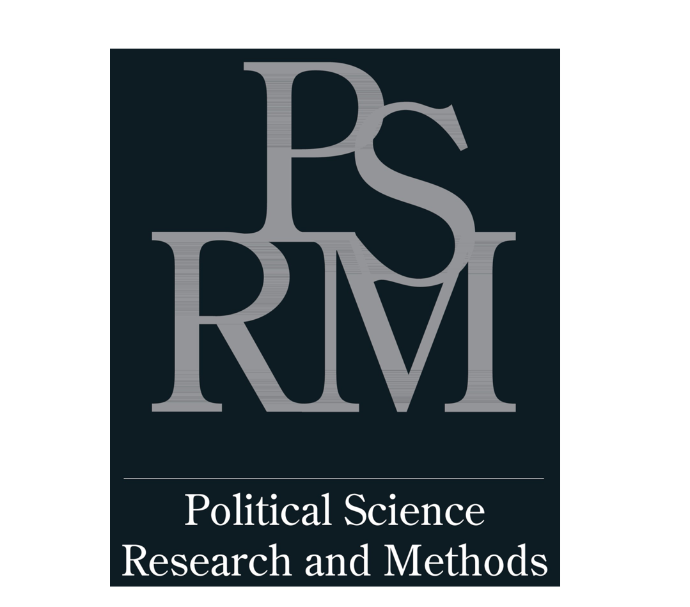
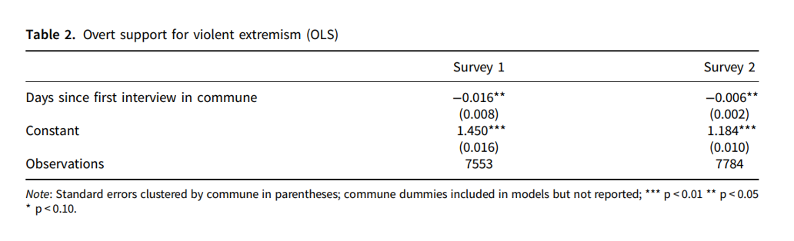
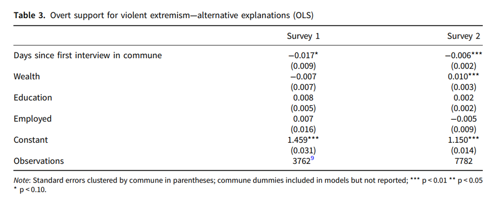
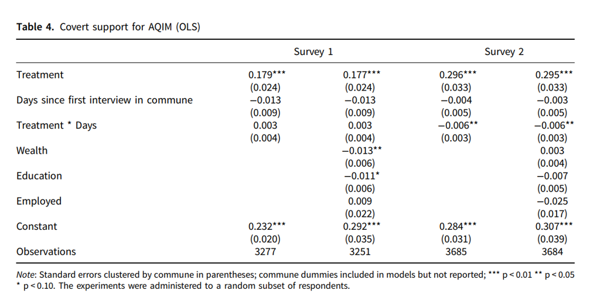
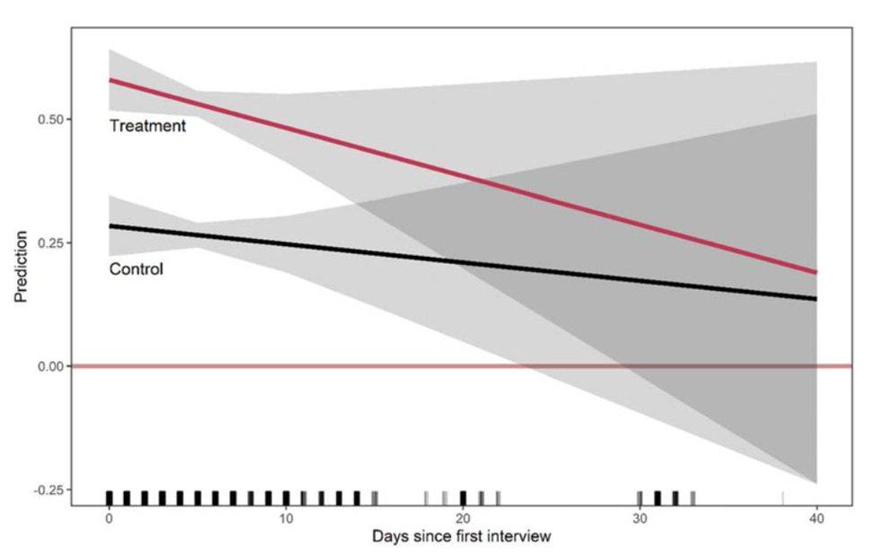
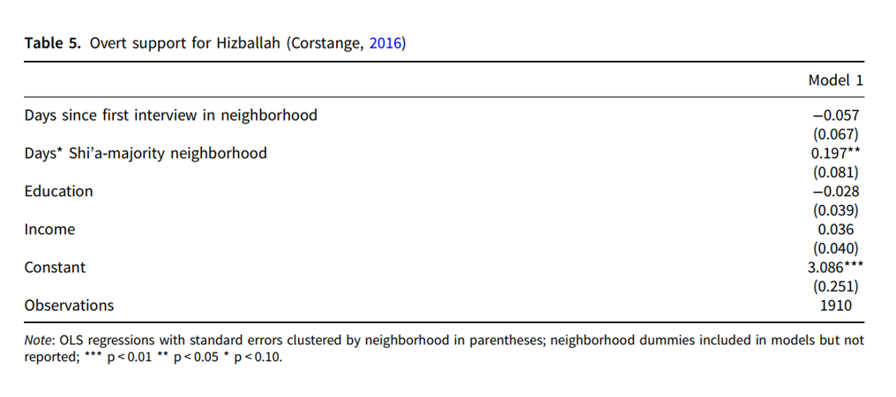

收录于合集
文献来源： McCauley, J., Finkel, S., Neureiter, M., & Belasco, C. (2020). The grapevine effect in sensitive data collection: Examining response patterns in support for violent extremism. Political Science Research and Methods , 1-19. doi:10.1017/psrm.2020.34
主要作者简介： John McCauley，马里兰大学帕克分校政府系副教授；Steven E. Finkel，匹兹堡大学政治学系教授；Michael Neureiter,匹兹堡大学商学院博士后研究员；Christopher Belasco，匹兹堡大学公共和国际事务学院兼职教授。

敏感的政治学话题在近些年来越发难以研究，研究者需要通过各种方法，比如随机自然实验，内隐联想测试，脑成像技术等来排除各种应答偏误，以得到受访者的真实态度。尽管这些方法帮助研究者们降低在这一领域内进行因果推断的难度，但是既有研究却忽视了敏感数据本身的收集过程。因此作者以对暴力极端主义（violent extremism）的支持为例，论证受访者在面对敏感话题时会受到例如对权力报复的恐惧而改变他们的回答。
作者分别在2013年和2017年收集了布基纳法索、乍得和尼日尔三个地区共计近15600份样本。他们发现，在不同时期，这些地区对暴力极端主义的支持存在系统差异，晚近时期的调查显示，对暴力极端主义的支持下降非常明显。作者对模型中可能存在的选择效应，社群混杂效应进行控制，并利用Corstange(2016)在黎巴嫩地区收集的对真主党（Hizballah）的支持数据对模型进行进一步评估，验证了上述论点的可靠性。
随时间变化的应答模式
涉及个人层面的大面积数据收集项目往往需要得到国家和地方的授权。而在关于恐怖主义的研究中，有些情况下地方政府在面对恐怖主义势力和组织时显得比较弱势，无法提供准许。但是无论是谁在地方掌握实际权力，这种拥有制裁能力的权力会对学术研究造成影响。在布基纳法索、乍得和尼日尔地区，恐怖主义势力并未在明面上展开活动，因此这些地区的地方政府被视为地方的掌权者。
个体在调查中会出现三种倾向。其一，特别是在乡村地区，调查员非常显眼，当地居民很快能够意识到社区正在进行一项调查。那么先参与调查的人和后参与调查的人所得到的信息是不一样的；其二，发展中地区的民众对问卷调查的来源和保密性持严重的怀疑态度，他们往往会认为这些非党派性非政府的调查项目是由政府发起的，因此他们会认为他们的回答会为当地政府所知；其三，民众认为当地政府有能力使用，而且滥用惩罚权力，这也是他们对地方政府信任度不高的原因之一。这三个倾向会产生这样的影响，即随着调研时间线的推进，受访者的答案会逐渐倾向于和地方掌权者所认同的回答相一致。
情境效应对社会调查也有很大影响。访员的特征在面对面调查的过程中会影响到受访者的应答，包括访员的使用语言、种族、宗教信仰甚至是性别，在一些敏感话题上，这些影响也会被放大。而在不同的国家，受访者的自我审查（self- censorship）程度也各有不同。这些情境效应都是社会期望偏差的一种表现。尽管通过实验等手段能够更加接近受访者的真实态度，但是随着信息的扩散，受访者的回答依然是不稳定的。
因此，作者借用“葡萄藤效应”来描述这样一种现象，即关于敏感话题的调查信息会在社群中扩散，因此随后参与调研的回答者比先参与的人要更为谨慎，以免受到自己提供的不合适的回答所带来的报复。这种“葡萄藤效应”也有如下体现：其一，尽管访员要求私下访谈，但是依然在访谈过程中，孩子和户主通常都在，而有时邻居也会围群旁观；其二，在一些乡村地区，一些水井旁往往是当地社区的消息集散地，调研内容很快会在第二天通过这里传递给社区其他民众；其三，无论是围观旁听还是通过消息集散地得知的消息，很快会传递给家人，因此在访员到访时，他们已经做好了受访的准备。
数 据分析
数据收集团队第一次在三个地区收集数据，平均花费时间为5.8天，第二次收集数据平均花费时间为8.4天（受到炎热天气的影响）。以花费天数为主要解释变量对支持暴力极端主义进行回归，结果如下：

显然，调研天数的协方差系数显著为负，说明随着调研天数的增加，对暴力极端主义的支持在降低，这和地方政府的反恐主张是一致的。为了避免其他混杂效应，作者加入了一些控制变量，结果依然显示调研天数对支持暴力极端主义的显著负效应。

考虑到应答的离散性，作者对不同题项的回答做了描述性统计，结果显示在调研末期，第一次调研的支持率降低了18%，第二次则降低了30%。
为了验证“葡萄藤效应”的存在，作者设计了如下实验。首先，将受访者随机分配到控制组与实验组，每组人数相等两组人回答同样的问题，但是实验组的问题中包含一个对极端团体的支持题项。描述性统计结果显示，实验组对极端团体的支持要低于控制组。接着，作者对应答进行重编码，一点也不支持（not at all）疫苗接种项目的编码为1（即支持极端组织），中立或强烈支持疫苗接种项目的编码为0（即不支持极端组织），并将这一虚拟变量纳入OLS模型（作者在附录3中也展示了logit回归结果）中以考察时间对支持暴力极端主义的影响。
 
回归结果显示，这种处理效应在两次调查中都是显著的。且处理效应与时间的交互效应在第二次调研中也比较显著，交互效应图显示，随着调研天数增加，控制组和实验组对暴力极端主义的支持都在降低，而在调研天数较少的情况下，两组的支持程度存在统计学上的显著差异。
为了避免在调研过程中可能出现的因访员因素造成的应答偏误，作者设计了两个安慰剂实验，包括前文提到的对疫苗接种项目的支持以及当地民众对异种族通婚的态度。对安慰剂效应进行检验的结果揭示了这种访员因素并不存在。
来自调查以外的证据
作者使用了Corstange对民众支持黎巴嫩什叶派真主党的数据来验证本文的假设。回归结果同样证明，调研时间对支持真主党具有显著影响。由于真主党在地方是掌权势力，因此调研时间的效应是正的，依然说明“葡萄藤效应”让民众的反应倾向于站在地方掌权派的一边。

结论
本文的研究揭示了关于敏感话题的社会调查过程中“葡萄藤效应”的存在，说明随着信息在社区中的扩散，伴随着人们对调研项目和人员的怀疑以及对掌权者可能报复的畏惧心理，受访者可能会隐藏他们的真实态度，表现出倾向于当地掌权者的态度。
因此作者针对上述“葡萄藤效应”提出三个建议：
1、在公开的调查与实验过程中，一定要注意活动信息在地方社区的扩散和参与者对地方掌权者的态度；
2、早期的调查更能真实地反映受访者的态度，而较晚的调查会受到畏惧报复心理的影响；
3、征募更多的调研团队在较短时间内完成调研可能可以得到更为真实的态度，尽管这对调查的质量控制过程会有一定的挑战。
编译：刘天祥 审校：杨端程 编辑：康张城
【政文观止Poliview】系头条号签约作者